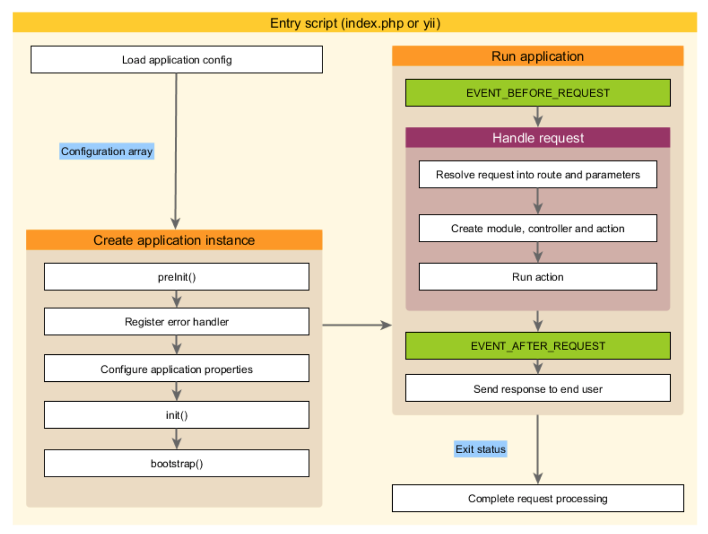

Applicazioni¶
Le applicazioni sono oggetti che regolano la struttura complessiva e il ciclo di vita dei sistemi applicativi di Yii. Ogni sistema applicativo Yii contiene un singolo oggetto di applicazione che viene creato nell'entry script ed è globalmente accessibile tramite l'espressione \Yii::$app.
Info
A seconda del contesto, quando diciamo "un'applicazione", può significare o un oggetto dell'applicazione o un sistema applicativo
Esistono due tipo di applicazioni: applicazioni Web e applicazioni Console. Come indicano i nomi, il primo gestisce principalmente le richieste Web, mentre quest'ultimo gestisce le richieste di comando della console.
Configurazione dell'applicazione¶
Quando uno script di accesso crea un'applicazione, caricherà una configurazione e la applica all'app, come segue:
require(__DIR__ . '/../vendor/autoload.php');
require(__DIR__ . '/../vendor/yiisoft/yii2/Yii.php');
// load application configuration
$config = require(__DIR__ . '/../config/web.php');
// instantiate and configure the application
(new yii\web\Application($config))->run();
Le configurazioni applicative specificano come inizializzare le proprietà degli oggetti applicativi. Poichè le configurazioni di applicazione sono complesse, vengono di solito conservate in file di configurazione come web.php nell'esempio precedente.
Proprietà dell'applicazione¶
Ci sono molte proprietà che può avere un'applicazione e che dovremmo configurare ne file di configurazione. Queste proprietà descrivono in genere l'ambiente in cui sono in esecuzione applicazioni. Ad esemppio, le applicazioni devono sapere come caricare i controller, dove memorizzare file temporanei, ect.. Adesso andremo ad elencare queste proprietà.
Proprietà richieste¶
In qualsiasi applicazione, è necessario almeno configurare le seguenti due proprietà:
ID
La proprietà ID specifica un id univoco che differenzia un'applicazione da un'altra. Sebbene non sia un requisito, per una migliore interoperabilità è consigliabile utilizzare solo caratteri alfanumerici quando si specifica un ID dell'applicazione.
basePath
La proprietà "basePath" specifica la directory principale di un'applicazione. E' la directory che contiene tutto il codice sorgente protetto di un sistema applicativo. In base a tale directory, normalmente ci saranno sotto-directory come models, views e controllers che contengono il codice sorgente corrispondente al pattern MVC.
E' possibile configurare la proprietà "basePath" utilizzando un percorso di directory o un alias di percorso. In entrambe le forme, la directory corrispondente deve esistere oppure verrà lanciata un'eccezione. Il percorso viene normalizzato chiamando la funzione realpath().
Proprietà importanti¶
Le proprietà descritte in questa sottosezione spesso devono essere configurare perchè differiscono da diverse applicazioni.
Alias
Questa proprietà consente di definire un insieme di alias in termini di array. Le chiavi dell'array sono nomi di alias e i valori dell'array sono le corrispondenti definizioni del percorso. Per esempio:
[
'aliases' => [
'@name1' => 'path/to/path1',
'@name2' => 'path/to/path2',
],
]
Questa proprietà viene utilizzata per richiamare un'applicazione che potrebbe avere un nome differente a quello indicato nell'ID.
Bootstrap
Questa è una proprietà molto utile. Consente di specificare una serie di componenti che devono essere eseguiti durante il processo di avvio dell'applicazione. Ad esempio, se si desidera che un modulo personalizza le regole URL, è possibile elencare l'ID come elemento di questa proprietà. Ogni componente elencato in questa proprietà può essere specificato in uno dei seguenti formati: - un ID di un'applicazione specificato tramite componenti, - un modulo ID specificato tramite moduli, - un nome di una classe, - un array di configurazione, - una funzione anonima che crea e restituisce un determinato componente.
Esempio:
[
'bootstrap' => [
// an application component ID or module ID
'demo',
// a class name
'app\components\Profiler',
// a configuration array
[
'class' => 'app\components\Profiler',
'level' => 3,
],
// an anonymous function
function () {
return new app\components\Profiler();
}
],
]
Info
se un ID di un modulo è lo stesso ID di un componente dell'applicazione, il componente verrà utilizzato durante il processo di avvio. Se si desidera usare il modulo invece del componente, è possibile specificarlo utilizzando una funzione anonima come segue:
[
function () {
return Yii::$app->getModule('user');
},
]
Durante il processo di avvio ogni componente viene instanziato. Se la classe dei componenti implementa “ yii /base / BootstrapInterface", verrà anche chiamato il metodo "bootstrap()". Questo metodo può contenere ID di eventuali moduli che voglio caricare prima di alcuni ( per es. il modulo ‘log’ per tener traccia di eventuali errori nella fase di caricamento ).
CatchAll
Questa proprietà è supportata solo dalle applicazioni Web. Specifica un'azione del controller che dovrebbe gestire tutte le richieste dell'utente. Questo viene utilizzato principalmente quando l'applicazione è in modalità di manutenzione (debug) e deve gestire tutte le richieste in entrata tramite un'unica azione. La configurazione è una matrice il cui primo elemento specifica il percorso dell'azione. Il resto degli elementi della matrice specifica i parametri da associare all'azione.
Esempio:
[
'catchAll' => [
'offline/notice',
'param1' => 'value1',
'param2' => 'value2',
],
]
Info
Il pannello di debug sull'ambiente di sviluppo non funziona quando questa proprietà è abilitata.
Componenti - (components)
Questa è la proprietà più importante. Consente di registrare un elenco di componenti denominati "application component" che è possibile utilizzare in altri luoghi.
Esempio:
[
'components' => [
'cache' => [
'class' => 'yii\caching\FileCache',
],
'user' => [
'identityClass' => 'app\models\User',
'enableAutoLogin' => true,
],
],
]
Ogni componente dell'applicazione viene specificata come array di chiave valore.
Esempio 2:
'components' => [ 'user' => [ 'identityClass' => 'common\models\User', 'enableAutoLogin' => true, ],]
Nella parte di codice sopra, si vede la struttura chiave-valore applicata. La prima chiave che troviamo è “User” cioè l’identificavo (ID) del modulo/componente, e il suo valore, è composto a sua volta da un array chiave-valore, dove le chiavi questa volta sono identificativi o della classe principale del modulo (identityClass) o di una sua configurazione (enableAutoLogin).
ControllerMap
Questa proprietà consente di mappare un controller ID in una classe arbitraria del controller. Per impostazione predefinitam Yii mapperà gli ID alle classi di controller basate su una convenzione ( ad esempio l'ID post verrà mappato app\controller\PostController). Configurando questa proprietà, è possibile rompere la convenzione per specifici controller. Nell'esempio seguente, account verrà mappato app\controllers\UserController, mentre article verrà mappato su app\controllers\PostController.
[
'controllerMap' => [
'account' => 'app\controllers\UserController',
'article' => [
'class' => 'app\controllers\PostController',
'enableCsrfValidation' => false,
],
],
]
Le chiavi dell'array rappresentano gli ID del controller, mentre i valori dell'array rappresentano i nomi o le configurazioni dei nomi delle classi di controllo corrispondenti.
ControllerNamespace
Questa proprietà specifica i namespace predefiniti in cui le classi controller devono essere posizionate. Come posizione di default li troveremo in app\controllers. Se è un ID del controller post, per convenzione corrisponderebbe il nome della classe di controllo PostController e il nome della classe completamente qualificato app\controllers\PostController.
Le classi del controller possono anche essere posizionate sotto le sotto-directory della directory corrispondente a questi namespace. Ad esempio, dato un ID controller admin/post, la corrispondente classe del controller completamente qualificata sarebbe app\controllers\admin\PostController.
E' importante che le classi di controllo pienamente qualificate debbano essere "autoloadable" e i namespace delle classi di controller corrispondino al valore di questa proprietà. Altrimenti riceverai un errore "Pagina non trovata" quando si accede alla nostra applicazione.
Lingua - (language)
Questa proprietà specifica la lingua in cui l'applicazionedeve visualizzare il contenuto agli utenti finali. Il valore predefinito di questa proprietà è en ( inglese ). E' necessario configurare questa proprietà se vogliamo che l'applicazione possa supportare più lingue.
Il valore di questa proprietà determina diversi aspetti di internalizzazione, tra cui la traduzione dei messaggi, la formattazione della data, la formattazione del numero, ecc..
Moduli - (modules)
Questa proprietà specifica i moduli che contiene l'applicazione. I moduli vengono visti come sotto-applicazioni della nostra applicazione padre.
Esempio:
[
'modules' => [
// a "booking" module specified with the module class
'booking' => 'app\modules\booking\BookingModule',
// a "comment" module specified with a configuration array
'comment' => [
'class' => 'app\modules\comment\CommentModule',
'db' => 'db',
],
],
]
Nome - (name)
Questa proprietà specifica il nome dell'applicazione che può essere visualizzato agli utenti finali. A differenza della proprietà ID, che dovrebbe assumere un valore univoco, il valore di questa proprietà è usato principalmente per scopi di visualizzazione. Non deve essere univoco.
Parametri - (params)
Questa proprietà specifica una serie di parametri applicativi accessibili a livello globale. Invece di utilizzare numerosi codici e stringhe dappertutto nel codice, è una buona pratica definirli come parametri dell'app in un unico punto e utilizzare parametri in luoghi dove è necessario.
Esempio: possiamo utilizzare questa proprietà per definire la dimensione dell'immagine in miniatura come parametro
[
'params' => [
'thumbnail.size' => [128, 128],
],
]
A questo punto nel codice in cui bisgona utilizzare il valore della dimensione, possiamo usare il seguente codice:
$size = \Yii::$app->params['thumbnail.size'];
$width = \Yii::$app->params['thumbnail.size'][0];
In seguito, se si decide di modificare le dimensioni delle miniature, è necessario modificarlo solo nella configurazione dell'applicazione; non è necessario toccare alcun codice dipendente.
Linguaggio del codice - (sourceLanguage)
Questa proprietà specifica la lingua in cui è scritto il codice dell'applicazione. Il valore predefinito è en-US, cioè l'inglese (Stati Uniti). E' necessario configurare questo proprietà se il contenuto del testo nel codice non è in inglese.
Fuso orario - (timeZone)
Questa proprietà viene fornita come modalità alternativa per impostare il fuso orario predefinito del runtime PHP. Configurando questa proprietà, si sta chiamando essenzialmente la funzione PHP "date_default_timezone_set()“.
Esempio:
[
'timeZone' => 'America/Los_Angeles',
]
Versioni - (version)
Questa proprietà specifica la versione dell'applicazione. E' predefinito 1.0.
Proprietà Utili¶
Le proprietà descritte in questa sottosezione non sono comunemente configurate perchè i loro valori predefiniti derivano da convenzioni comuni. Tuttavia, è possibile configurarli nel caso in cui si desidera rompere le convenzioni.
Charset
Questa proprietà specifica il carattere che l'applicazione utilizza. Il valore predefinito è quello UTF-8 che dovrebbe essere mantenuto come per la maggior parte delle applicazioni a meno che non si tratti di un sistema legacy che utilizza un sacco di dati non Unicode.
DefaultRoute
Questa proprietà specifica il percorso che un'applicazione deve utilizzare quando una richiesta non lo specifica. Ad esempio, help,post/create o admin/post/create. Se non viene dato un ID dell'azione, questa proprietà prende il valore predefinito specificato in “ yii \base \ Controller :: $defaultAction".
Per le applicazioni Web, il valore predefinito di questa proprietà è site, il che significa che il SiteController e l'azione predefinita devono essere utilizzati. Di conseguenza se si accede all'applicazione senza specificare un percorso, verrà visualizzato il risultato di app\controllers\SiteController::actionIndex().
Per le applicazioni tramite console, il valore predefinito è help, il che significa che il comando principale “ yii \ console \ controllers \ HelpController::actionIndex()“ deve essere utilizzato. Di conseguenza, se su esegue il comando yii senza fornire argomenti, visualizzerà le informazioni di aiuto(help).
Estensioni - (extensions)
Questa proprietà specifica l'elenco delle estensioni installate e utilizzate dall'applicazione. Per impostazione predefinita, l'array verrà restituito dal file @vendor/yiisoft/extensions.php. Il file extensions.php viene generato e mantenuto automaticamente quando si utilizza il Composer per installare le estensioni. Quindi, la maggior parte dei casi, non è necessario configurare questa proprietà.
Nel caso particolare quando si desidera mantenere manualmente le estensioni, è possibile configurare questa proprietà come segue:
[
'extensions' => [
[
'name' => 'extension name',
'version' => 'version number',
'bootstrap' => 'BootstrapClassName', // optional, may also be a configuration array
'alias' => [ // optional
'@alias1' => 'to/path1',
'@alias2' => 'to/path2',
],
],
// ... more extensions like the above ...
],
]
Come potete vedere, la proprietà prende una serie di specifiche di estensione. Ogni estensione è specificata con una matrice composta da elementi name e version.
Disposizione - (layout)
Questa proprietà specifica il nome del layout predefinito che dovrebbe essere utilizzato quando si effettua una visualizzazione. Il valore di defult è main, significa che il file di layout main.php sotto il percorso di layout dovrebbe essere usato. Se entrambi i percorsi di layout e il percorso di visualizzazione stanno prendendo i valori predefiniti, il file di layout predefinito può essere rappresentato come alias di percorso @app/views/layouts/main.php.
E' possibile configurare questa proprietà false se si desidera disattivare l'impostazione predefinita di layout.
layoutPath
Questa proprietà specifica il percorso in cui dovrebbero essere caricati i file di layout. Il valore predefinito è la sotto-directory layouts sotto il percorso di visualizzazione. Se il percorso di visualizzazione sta prendendo il suo valore predefinito, il percorso di layout può essere rappresentato come alias di percorso: @app/views/layouts.
runtimepath
Questa proprietà specifica il percorso in cui possono essere generati file temporanei, ad esempio file di log, file di cache.Il valore predefinito è la directory rappresentata dall'alias @app/runtime.
viewPath
Questa proprietà specifica la directory principale in cui si trovano i file di visualizzazione. Il valore predefinito della directory è rappresentata dall'alias @app/views.
vendorPath
Questa proprietà specifica la directory del fornitore gestita dal Composer. Contriene tutte le livrerie di terze parti utilizzate dall'applicazione, incluso il framework Yii. Il valore predefinito è la directory rappresentata dall'alias @aap/vendor.
enableCoreCommands
Questa proprietà è supportata solo dalle applicazioni tramite console. Specifica se i comandi base inclusi nella versione di Yii dovrebbero essere abilitati. Il valore predefinito è true.
Eventi dell'applicazione¶
Un'applicazione attiva diversi eventi durante il ciclo di vita di una richiesta. E' possibile associare i gestori di eventi nelle configurazioni dell'applicazione come segue:
[
'on beforeRequest' => function ($event) {
// ...
},
]
In alternativa è possibile associare i gestori di eventi durante il processo di avvio dopo che viene creata l'istanza dell'applicazione.
Esempio:
\Yii::$app->on(\yii\base\Application::EVENT_BEFORE_REQUEST, function ($event) {
// ...
});
EVENT_BEFORE_REQUEST
Questo evento viene attivato prima che un'applicazione gestisca una richiesta. Il nome effettivo dell'evento è beforeRequest.
EVENT_AFTER_REQUEST
Questo evento viene attivato dopo che un'applicazione gestisca una richiesta, ma prima di inviare la risposta. Il nome effettivo dell'evento è afterRequest.
Quando questo evento viene attivato, la gestione delle richieste è completata e si può prendere questa possibilità per eseguire una successiva elaborazione della richiesta o personalizzare la risposta.
EVENT_BEFORE_ACTION
Questo evento viene attivato prima di eseguire tutte le azioni del controller. Il nome effettivo dell'evento è beforeAction.
Il parametro dell'evento è un'istanza di yii \ base \ ActioneEvent. Un gestore di evento può impostare la proprietà dell'actionEvent [isValid()] ad essere false e smettere di eseguire l'azione.
Esempio:
[
'on beforeAction' => function ($event) {
if (some condition) {
$event->isValid = false;
} else {
}
},
]
Si noti che lo stesso evento beforeAction viene attivato anche dai moduli e dai controller. Gli oggetti applicativi sono i primi che innescano questo evento, seguito da moduli (se esistono) e infire da controllori. Se settiamo l'evento a false tramite il metodo [isValid()] tutti gli eventi successivi non vettanno attivati.
EVENT_AFTER_ACTION
Questo evento viene attivato dopo l'esecuzione di ogni azione del controller. Il nome effettivo dell'evento è afterAction.
Il parametro che andremo a settare all'evento è un'istanza di yii \ base \ ActionEvent. Attraverso la proprietà Yii dell'evento, un gestore di eventi può accedere o modificare il risultato dell'azione.
Esempio:
[
'on afterAction' => function ($event) {
if (some condition) {
// modify $event->result
} else {
}
},
]
Si noti che lo stesso evento afterAction viene attivato anche dai moduli e dai controller. Questi oggetti innescano questo evento nell'ordine inverso come per quello del beforeAction. Cioè, i controller sono i primi oggetti che innescano questo evento, seguito dai moduli ( ovviamente se esistono )e infine dalle applicazioni.
Ciclo di vita dell'applicazione¶

Quando viene eseguito uno script di inserimento (entry script) per gestire una richiesta, un'applicazione sarà sottoposta al seguente ciclo di vita:
- Lo script di inserimento carica la configurazione dell'applicazione come un array.
- Lo script di inserimento crea una nuova istanza dell'applicazione:
- viene chiamato preInit(), che configura alcune proprietà dell'applicazione al alta priorità ( come per esempio il basePath);
- registrare eventuali errori nel gestore di errori;
- configurare le proprietà dell'applicazione;
- viene chiamato init() che chiama ulteriormente bootstrap() per eseguire questi ultimi componenti.
- L'entry script chiama yii \ base Application :: run() per eseguire l'applicazione:
- viene attivato l'evento EVENT_BEFORE_REQUEST;
- viene controllata la richiesta. Viene convertita la richiesta in un percorso con i relativi parametri, viene creato un modulo, i controller e gli oggetti di azione come specificato nel percorso e infine viene eseguita l'azione;
- viene attivato l'evento EVENT_AFTER_REQUEST;
- infine viene inviata una risposta all'utente finale.
- L'entry script riceve lo stato di uscita dall'applicazione e completa l'elaborazione delle richieste.